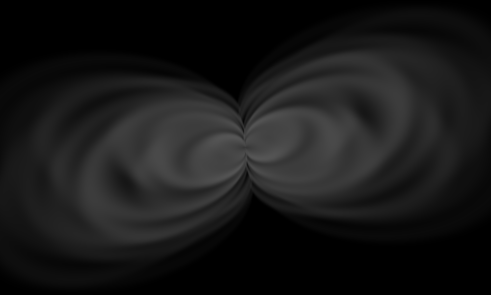
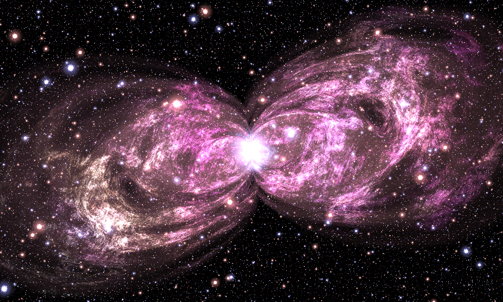
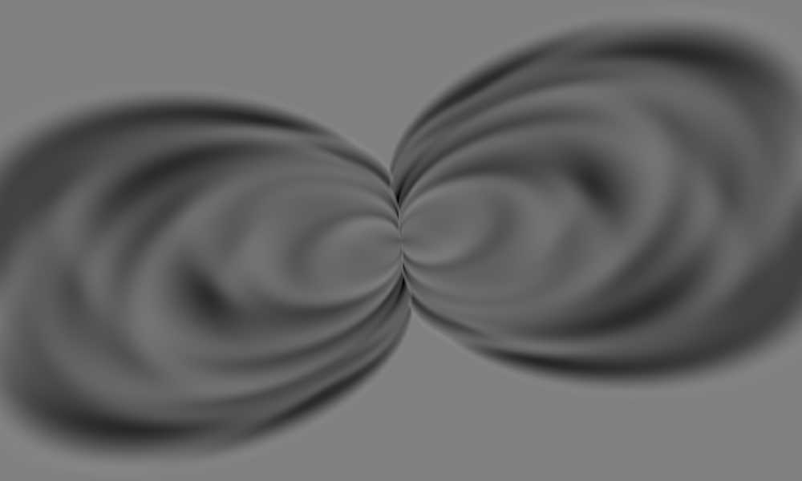
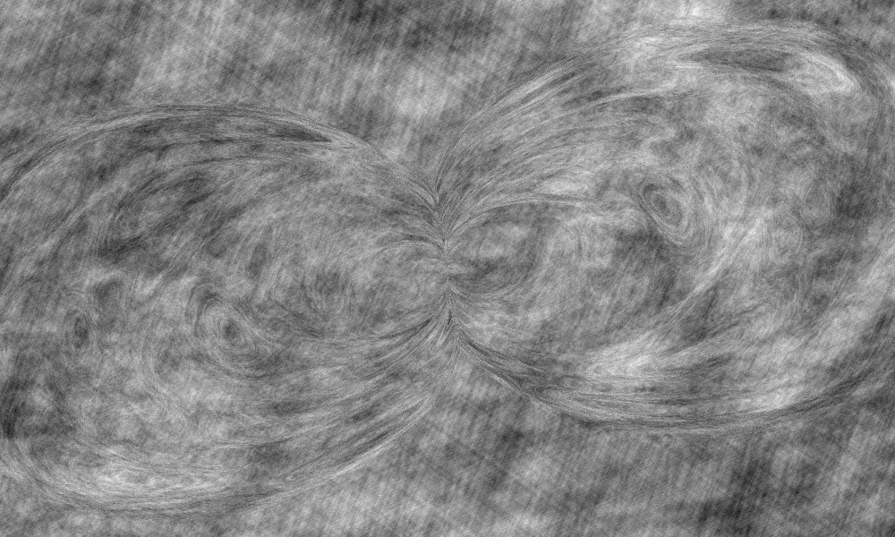
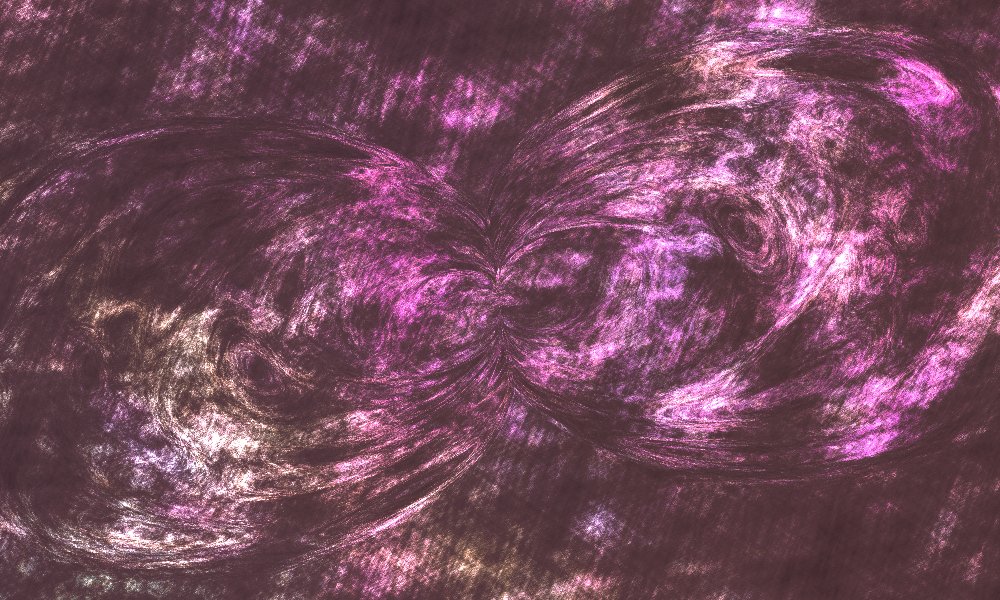
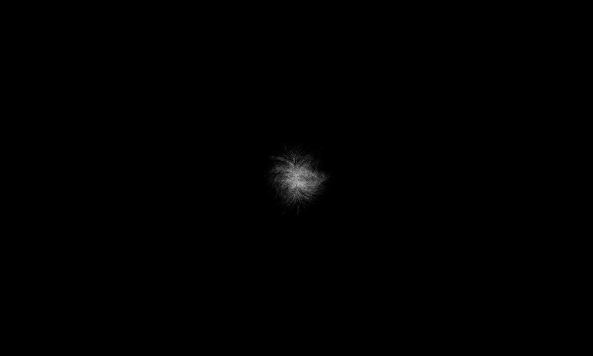
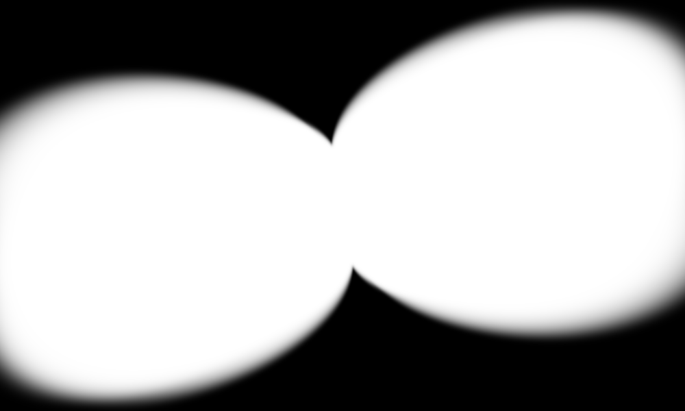

A: glowing shell envelope

Shown as 4*A in grayscale. Dark interiors and bright rims shape the lobes. This is an envelope, not an RGB layer.
A reconstruction of the mathematical artwork credited in the supplied image to Hamid Naderi Yeganeh. Everything here was computed from the printed equations. No source-photo pixels, star catalog, random noise image, or 3-D scene are sampled.
Read the project’s README.html and docs/WALKTHROUGH.html (or their Markdown versions) for the code and full explanation.
The controls below use bundled PNGs and work offline, including through a file: URL.

Gas + central glow + stars
Each of the eight combinations was added in floating-point radiance before the original display conversion F. These controls switch pre-rendered combinations; they do not re-run the shader in JavaScript or incorrectly add clipped images. Turning off the core does not restore the gas suppressed by 1-W.
These are explanatory visualizations, not additional independent emission layers. Signed fields and unmasked cloud intensity need different display scales. Exact normalizations and numerical ranges are recorded in atlas.json.

Shown as 4*A in grayscale. Dark interiors and bright rims shape the lobes. This is an envelope, not an RGB layer.

Signed field centered on middle gray. The texture reads this as a coordinate; it is not emitted light.

Signed field centered on middle gray. This changes both filament thresholds and the central-glow boundary.

Displayed at 0.05 times its raw intensity so its detail is visible. The final gas also multiplies K by 1.1*(1-W)*A.

Raw [0,1] values shown as grayscale. W adds the core; 1-W simultaneously removes gas from the same area.

1-product(1-J_s), shown in grayscale. Not used directly as a source emission mask; replacing A with it fills in the shells.
Run python -m examples.twin_nebulae to place two independently transformed gas structures over one shared star field.
Run python -m examples.custom_ring to replace the lobes with an elliptical ring while keeping the cloud shader.
The source code is the editable model; this gallery is its visual explanation.